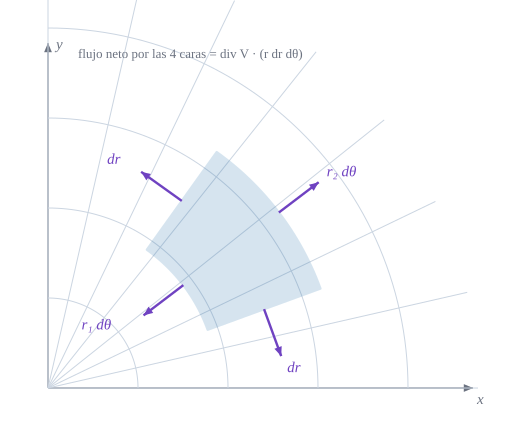

Gradiente, divergencia, rotacional y el teorema de la divergencia

Figura 7.1: Celda polar \(dr\times d\theta\) con las normales salientes de sus cuatro caras (violeta). Las caras curvas miden \(r_1\,d\theta\) y \(r_2\,d\theta\) y las rectas \(dr\): el área de la celda, \(r\,dr\,d\theta\), es el factor \(\sqrt g\) que aparecerá en todas las fórmulas.
Cómo se escriben el gradiente, la divergencia y el rotacional cuando las coordenadas curvan y estiran el espacio, y por qué aparece el factor raíz de g
Objetivos y prerrequisitos
Objetivos. Al terminar el tema sabrás:
manejar tensores de cualquier orden: suma, producto, contracción y simetrías;
usar el símbolo de permutación y el tensor de Levi-Civita \(\varepsilon_{ijk}=\sqrt g\,[ijk]\) para escribir el producto vectorial;
calcular gradiente, divergencia, laplaciano y rotacional en coordenadas curvilíneas;
enunciar y comprobar el teorema de la divergencia;
reconocer por qué estas fórmulas harán falta para escribir el equilibrio de un sólido y de una lámina.
Un tensor de orden \(p+q\), con \(p\) índices altos y \(q\) bajos, es una colección de componentes \(T^{i_1\dots i_p}{}_{j_1\dots j_q}\) que se transforman con un factor \(J\) por cada índice alto y un factor \(\tilde J\) por cada índice bajo (tema de transformación de coordenadas). Se pueden construir tensores nuevos con cuatro operaciones:
Operación
Ejemplo
Resultado
Suma (mismos índices)
\(A^{ij}+B^{ij}\)
tensor del mismo tipo
Producto
\(A^iB_j\)
tensor de orden 2, tipo \((1,1)\)
Contracción (igualar un índice alto y uno bajo)
\(A^i{}_i\)
tensor de orden menor en dos: aquí, un escalar
Subir/bajar con la métrica
\(A_{ij}=g_{ik}A^k{}_j\)
tensor con los índices cambiados de posición
La contracción de dos tensores (\(V^iW_i\)) es el invariante que ya conocemos. Un tensor \(T_{ij}\) es simétrico si \(T_{ij}=T_{ji}\) y antisimétrico si \(T_{ij}=-T_{ji}\); estas propiedades se conservan al cambiar de coordenadas. Todo tensor de orden dos se escribe como suma de una parte simétrica y otra antisimétrica: \[
T_{ij}=\underbrace{\tfrac12\bigl(T_{ij}+T_{ji}\bigr)}_{\text{simétrica}}+\underbrace{\tfrac12\bigl(T_{ij}-T_{ji}\bigr)}_{\text{antisimétrica}} .
\tag{7.1}\]
Ejemplo 7.1 (Ejemplo resuelto: contracciones y simetría) Sea \(T^i{}_j=\begin{pmatrix}2&1\\3&4\end{pmatrix}\) (fila \(i\), columna \(j\)) en un sistema ortonormal, de modo que \(T_{ij}=T^i{}_j\). Su traza (contracción) es \(T^i{}_i=2+4=6\): un escalar, el mismo en cualquier sistema. La parte simétrica es \(\tfrac12(T+T^{\mathsf T})=\begin{pmatrix}2&2\\2&4\end{pmatrix}\) y la antisimétrica \(\tfrac12(T-T^{\mathsf T})=\begin{pmatrix}0&-1\\1&0\end{pmatrix}\); su suma devuelve \(T\). Un tensor simétrico y otro antisimétrico siempre dan cero al contraerlos: \(S_{ij}A^{ij}=0\).
TipIdea clave
Los tensores se pueden sumar, multiplicar y contraer sin salirse de la familia de objetos con ley de transformación correcta. Si una fórmula solo usa estas operaciones con los índices bien colocados, vale en cualquier sistema de coordenadas.
7.2 Producto vectorial y símbolo de Levi-Civita
El símbolo de permutación\([ijk]\) vale \(+1\) para las permutaciones pares de \((1,2,3)\), \(-1\) para las impares y \(0\) si hay índices repetidos. No es un tensor (sus valores no cambian al cambiar de coordenadas), pero multiplicado por \(\sqrt g\) sí lo es.
Proposición 7.1 (Producto vectorial en curvilíneas) Con \(\varepsilon_{ijk}=\sqrt g\,[ijk]\) y \(\varepsilon^{ijk}=[ijk]/\sqrt g\) (tensor de Levi-Civita), para una base dextrógira\[
\mathbf{g}_i\times\mathbf{g}_j=\varepsilon_{ijk}\,\mathbf{g}^k,\qquad
\mathbf{u}\times\mathbf{v}=\varepsilon^{ijk}\,u_iv_j\,\mathbf{g}_k .
\tag{7.2}\]
Para vectores unitarios ortogonales dextrógiros, \(\mathbf{e}_i\times\mathbf{e}_j=[ijk]\mathbf{e}_k\). En una base general \(B\) (columnas \(\mathbf{g}_i\)), \(\mathbf{g}_i\cdot(\mathbf{g}_j\times\mathbf{g}_k)=[ijk]\det B\) y \(\det B=\sqrt g\) (por \(g=(\det B)^2\) y orientación positiva). Entonces \((\mathbf{g}_i\times\mathbf{g}_j)\cdot\mathbf{g}_k=\sqrt g\,[ijk]\), que son las componentes covariantes de \(\mathbf{g}_i\times\mathbf{g}_j\) respecto de la base recíproca: \(\mathbf{g}_i\times\mathbf{g}_j=\sqrt g\,[ijk]\,\mathbf{g}^k\). La segunda fórmula se obtiene por bilinealidad. \(\blacksquare\)
Ejemplo 7.2 (Ejemplo resuelto: el producto vectorial en cilíndricas) En cilíndricas \((\rho,\varphi,z)\) la métrica es \(\operatorname{diag}(1,\rho^2,1)\) y \(\sqrt g=\rho\). Entonces \(\mathbf{g}_1\times\mathbf{g}_2=\varepsilon_{123}\,\mathbf{g}^3=\rho\,\mathbf{g}^3\). Como \(\mathbf{g}^3=\mathbf{e}_z\), resulta \(\mathbf{g}_1\times\mathbf{g}_2=\rho\,\mathbf{e}_z\). Comprobación directa: \((\cos\varphi,\sin\varphi,0)\times\rho(-\sin\varphi,\cos\varphi,0)=\rho(0,0,\cos^2\varphi+\sin^2\varphi)=\rho\,\mathbf{e}_z\) ✓.
Pon a prueba lo anterior. Los ejercicios se corrigen en tu navegador y no envían nada a ningún sitio.
Si \(S_{ij}\) es simétrico y \(A^{ij}\) antisimétrico, ¿cuánto vale \(S_{ij}A^{ij}\)?
\(2S_{12}A^{12}\)
Depende del sistema de coordenadas
Cero
\(\operatorname{tr}S\cdot\operatorname{tr}A\)
Cero: \(S_{ij}A^{ij}=S_{ji}A^{ji}=-S_{ij}A^{ij}\) (se renombran los índices y se usa la simetría y la antisimetría), luego es nulo.
El símbolo de permutación \([ijk]\) (con valores \(0,\pm1\)) es por sí solo un tensor.
Falso. Hay que multiplicarlo por \(\sqrt g\) (o dividirlo, según la posición de los índices) para obtener el tensor de Levi-Civita; sus valores son los mismos en todos los sistemas, y un tensor no los mantendría.
7.3 Gradiente, divergencia, laplaciano y rotacional
Los operadores diferenciales se definen con la derivada covariante, que ya sabemos construir. La compatibilidad con la métrica permite escribir las fórmulas de forma muy compacta.
Proposición 7.2 (Operadores en coordenadas curvilíneas) Para un escalar \(f\) y un campo \(\mathbf{V}\) con componentes \(V^i\) (contravariantes) y \(V_i\) (covariantes): \[
\begin{aligned}
(\nabla f)^i&=g^{ij}\,\partial_jf,\\
\nabla\!\cdot\!\mathbf{V}&=V^i{}_{\|i}=\frac1{\sqrt g}\,\partial_i\bigl(\sqrt g\,V^i\bigr),\\
\Delta f&=\nabla\!\cdot\!\nabla f=\frac1{\sqrt g}\,\partial_i\bigl(\sqrt g\,g^{ij}\,\partial_jf\bigr),\\
(\nabla\times\mathbf{V})^i&=\varepsilon^{ijk}\,\partial_jV_k=\frac1{\sqrt g}\,[ijk]\,\partial_jV_k .
\end{aligned}
\tag{7.3}\]
Gradiente.\(\partial_if\) son las componentes covariantes de \(\nabla f\) y se suben con \(g^{ij}\).
Divergencia.\(V^i{}_{\|i}=\partial_iV^i+\Gamma^i_{ki}V^k\). De ecuación 6.2, \(\Gamma^i_{ki}=\tfrac12g^{il}\partial_kg_{il}=\partial_k\ln\sqrt g\) (derivada del determinante: \(\partial_kg=g\,g^{il}\partial_kg_{il}\)). Luego \(V^i{}_{\|i}=\partial_iV^i+V^k\partial_k\ln\sqrt g=\frac1{\sqrt g}\partial_i(\sqrt gV^i)\).
Laplaciano. Es la divergencia del gradiente, \(V^i=g^{ij}\partial_jf\).
Rotacional. En el rotacional las derivadas de Christoffel se cancelan por simetría (\(\Gamma^k_{ij}=\Gamma^k_{ji}\)), de modo que basta con \(\partial_jV_k\) antisimetrizado; el factor \(1/\sqrt g\) viene de \(\varepsilon^{ijk}\). \(\blacksquare\)
Ejemplo 7.3 (Ejemplo resuelto: operadores en polares y en esféricas)Polares, con \(\sqrt g=r\) y \(g^{ij}=\operatorname{diag}(1,1/r^2)\):
Gradiente de \(f=r^2\):\((\nabla f)^r=2r\), \((\nabla f)^\theta=0\): es \(2r\,\mathbf{g}_1\), el campo radial esperado (\(\nabla(x^2+y^2)=2(x,y)\)).
Divergencia del campo posición\(\mathbf{V}=(x,y)=r\,\mathbf{g}_1\) (componentes \(V^r=r\), \(V^\theta=0\)): \[
\nabla\!\cdot\!\mathbf{V}=\frac1r\,\partial_r(r\cdot r)=2 .
\]
Laplaciano:\(\Delta f=\dfrac1r\partial_r\bigl(r\,\partial_rf\bigr)+\dfrac1{r^2}\partial^2_\theta f\). Para \(f=r^2\cos2\theta\) (\(=x^2-y^2\), armónica): \(\Delta f=4\cos2\theta-4\cos2\theta=0\) ✓.
Esféricas\((r,\theta,\varphi)\), con \(\sqrt g=r^2\sin\theta\): la divergencia del campo posición (\(V^r=r\)) es \(\dfrac{1}{r^2\sin\theta}\partial_r\bigl(r^2\sin\theta\cdot r\bigr)=3\).
AdvertenciaErrores frecuentes
\(\nabla\!\cdot\!\mathbf{V}\neq\partial_iV^i\) en curvilíneas: falta el término de \(\Gamma\) (equivalentemente, el factor \(\sqrt g\)).
Los operadores de \(\mathbf{V}\) se calculan con componentes contravariantes en la divergencia y covariantes en el rotacional: no se pueden intercambiar sin subir o bajar el índice.
El «laplaciano» de un campo vectorial en curvilíneas no es el laplaciano de cada componente.
Pon a prueba lo anterior.
En polares, ¿cuánto vale \(\Delta f\) para \(f=r^3\) en \(r=2\)?
\(\Delta f=\dfrac1r\partial_r(r\,\partial_rf)\) cuando \(f\) no depende de \(\theta\).
\(\partial_rf=3r^2\), \(r\,\partial_rf=3r^3\), \(\partial_r(3r^3)=9r^2\) y \(\Delta f=9r^2/r=9r=18\).
En esféricas, ¿cuánto vale la divergencia del campo posición \(\mathbf{V}=r\,\mathbf{g}_1\)?
En coordenadas curvilíneas, \(\nabla\!\cdot\!\mathbf{V}=\partial_iV^i\).
Falso. Hay que añadir \(\Gamma^i_{ki}V^k\), es decir, usar \(\frac1{\sqrt g}\partial_i(\sqrt g\,V^i)\).
7.4 El teorema de la divergencia
El resultado central de este tema relaciona la divergencia en un recinto con el flujo a través de su frontera, y será la herramienta para pasar de «equilibrio de un trozo» a «ecuación diferencial» (bloque D).
Teorema 7.1 (Teorema de la divergencia) Sea \(\Omega\) un recinto acotado con frontera regular \(\partial\Omega\) y normal unitaria saliente \(\mathbf{n}\). Para un campo \(\mathbf{V}\) de clase \(C^1\), \[
\int_\Omega\nabla\!\cdot\!\mathbf{V}\;dV=\oint_{\partial\Omega}\mathbf{V}\!\cdot\!\mathbf{n}\;dS .
\tag{7.4}\] En coordenadas, \(dV=\sqrt g\,d\theta^1d\theta^2d\theta^3\).
La figura de portada ayuda a entenderlo: el flujo neto de \(\mathbf{V}\) por las cuatro caras de una celda diminuta es \(\nabla\!\cdot\!\mathbf{V}\) por el área de la celda; sumar todas las celdas hace que los flujos por las caras interiores se cancelen y solo queden los de la frontera.
NotaIdea de la demostración (celda curvilínea)
Para una celda \(d\theta^1\times d\theta^2\) de lados \(\mathbf{g}_1d\theta^1\) y \(\mathbf{g}_2d\theta^2\), el flujo por las caras opuestas \(\theta^1\) y \(\theta^1+d\theta^1\) es \(\bigl[\sqrt g\,V^1\bigr]_{\theta^1}^{\theta^1+d\theta^1}d\theta^2=\partial_1\bigl(\sqrt g\,V^1\bigr)d\theta^1d\theta^2\), y análogamente con \(\theta^2\). Sumando y dividiendo por el área \(\sqrt g\,d\theta^1d\theta^2\) se obtiene la fórmula de la divergencia de ecuación 7.3; sumar las celdas cancela los flujos interiores. La demostración rigurosa para recintos generales es estándar (Lebedev y Cloud 2003; Heinbockel 1996). \(\square\)
NotaUn poco de historia: un teorema con varios padres
El resultado que hoy llamamos teorema de la divergencia (o de Gauss–Ostrogradski) tiene una historia repartida. Lagrange lo encontró en 1762 sin demostrarlo; Gauss trató casos particulares (en 1813 y, sin conocer el trabajo ruso, de nuevo en 1833 y 1839); y Mijaíl Ostrogradski presentó en la Academia de París, en 1826 (publicado después), la primera demostración general. George Green obtuvo por su cuenta la versión en dos dimensiones, hoy llamada teorema de Green, en un trabajo de 1828. Por eso se le conoce también como fórmula de Gauss–Green.
\(\dfrac1{\sqrt g}\partial_i(\sqrt g\,V^i)\) es flujo por unidad de volumen. Las fórmulas de los operadores no son magia: el factor \(\sqrt g\) no es más que el área o el volumen de la celda en coordenadas.
7.5 Práctica guiada en Julia
TipEjemplo computacional
calculado Se comprueban los operadores de ecuación 7.3 con Geometria (divergencia, gradiente, laplaciano, rotacional) y el teorema de la divergencia en un disco.
# Teorema de la divergencia en el disco de radio R: ∫ div V dA = ∮ V·n ds, con V = (x, y)R =2.0; N =400volumen =sum(divergencia(polar, t -> [t[1], 0.0], [(i -0.5) * R / N, 0.3]) * ((i -0.5) * R / N) * (R / N) *2π for i in1:N)flujo = (R) *2π * R # V·n = R sobre la circunferencia, de longitud 2πR(integral_div = volumen, flujo_frontera = flujo, coinciden =isapprox(volumen, flujo; rtol =1e-3))
Esféricas. Calcula \(\Delta f\) en esféricas para \(f=r^2\).
NotaSolución
\(\Delta f=\dfrac1{r^2}\partial_r(r^2\cdot2r)=\dfrac{6r^2}{r^2}=6\) (en cartesianas, \(\Delta(x^2+y^2+z^2)=6\) ✓).
Cilindro. Con el teorema de la divergencia, calcula el flujo de \(\mathbf{V}=(x,y,z)\) a través de la superficie de un cilindro de radio \(R\) y altura \(h\).
NotaSolución
\(\nabla\!\cdot\!\mathbf{V}=3\) y el volumen es \(\pi R^2h\): flujo \(=3\pi R^2h\).
Con Julia. Comprueba con rotacional que el rotacional de un gradiente es cero, por ejemplo con \(f=r^2\sin\theta\cos\varphi\) en esféricas.
NotaSolución
Los componentes covariantes del gradiente son \(\partial_if\); Vdn(t) = [∂ᵢf] por diferencias finitas y rotacional(esf, Vdn, t) devuelve \(\approx(0,0,0)\) porque \(\partial_j\partial_kf\) es simétrica.
La doy por superada si…
Sumo, multiplico y contraigo tensores y sé qué tipo de objeto resulta.
Descompongo un tensor de orden dos en parte simétrica y antisimétrica.
Escribo el producto vectorial con \(\varepsilon_{ijk}=\sqrt g\,[ijk]\).
Calculo gradiente, divergencia, laplaciano y rotacional en polares, cilíndricas o esféricas.
Enuncio el teorema de la divergencia y lo interpreto como flujo por unidad de volumen.
Qué queda pendiente. La demostración del teorema es solo una idea (celda curvilínea); revisión visual de la figura; nota histórica basada en fuentes secundarias; referencias no leídas línea a línea.
Flügge, W. 1972. Tensor Analysis and Continuum Mechanics. Springer-Verlag.
Spiegel, M. R. 1959. Vector Analysis and an Introduction to Tensor Analysis. Schaum’s Outlines.
Lebedev, L. P., y M. J. Cloud. 2003. Tensor Analysis. World Scientific.
Heinbockel, J. H. 1996. Introduction to Tensor Calculus and Continuum Mechanics. Department of Mathematics; Statistics, Old Dominion University.
Referencias
Son las mismas que aparecen en el margen, junto al texto.
Flügge, W. 1972. Tensor Analysis and Continuum Mechanics. Springer-Verlag.
Heinbockel, J. H. 1996. Introduction to Tensor Calculus and Continuum Mechanics. Department of Mathematics; Statistics, Old Dominion University.
Lebedev, L. P., y M. J. Cloud. 2003. Tensor Analysis. World Scientific.
Spiegel, M. R. 1959. Vector Analysis and an Introduction to Tensor Analysis. Schaum’s Outlines.